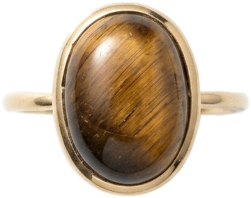
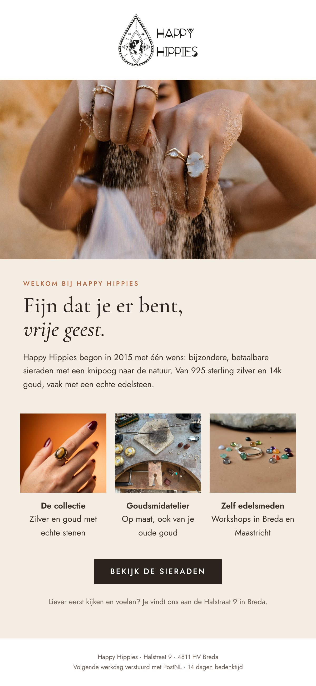
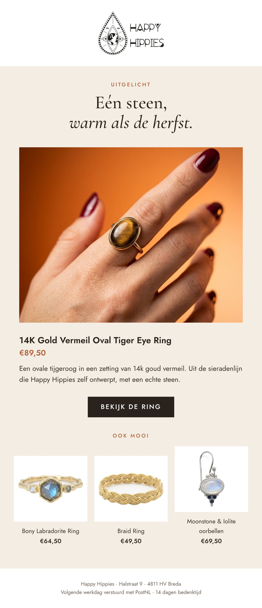

Voorbeelden voor Happy Hippies
Vijf redenen om een echte steen te dragen.
Vijf advertenties en twee nieuwsbrieven, gemaakt met jullie eigen foto's en productinformatie. Een idee van Issey Kooijmans van Digital Essence; niets hiervan is gepubliceerd.
Hoi team Happy Hippies, jullie foto van handen vol ringen in het zand zegt meteen waar Happy Hippies voor staat. Daarmee heb ik vijf advertenties en twee nieuwsbrieven gemaakt, met jullie eigen foto's van de sieraden en uit de workshops. Niets is gepubliceerd. Past het niet, zeg het gerust.
Eerst even uitgelegd
Wat is een invalshoek?
Een invalshoek is de reden waarom iemand iets koopt. Dezelfde ring kun je op heel veel manieren verkopen, omdat niet iedereen om dezelfde reden koopt.
Dezelfde ring, vijf verschillende redenen om hem te kopen. Elke reden wordt een eigen advertentie.

- 01Het gevoel"Welke steen past bij mij?"
- 02Humor"Is één ring niet genoeg?"
- 03Transparantie"Is dit echt zilver en een echte steen?"
- 04Hoe het werkt"Kan ik dat zelf wel?"
- 05Zekerheid"Wat als hij toch niet past?"
We testen die invalshoeken naast elkaar. Na een paar dagen zie je welke het meest verkoopt. Daar maken we er meer van, en wat niet werkt, gaat eruit.
Zo werk ik
Van eerste blik tot bestelling.
Niet iedereen die een advertentie ziet, is meteen klaar om te kopen. Daarom maak ik voor elke stap andere advertenties. Zo spreek je iedereen aan op het moment waar hij of zij zit.
- Stap 1 · Top of funnel
Kennismaken
Mensen die Happy Hippies nog nooit hebben gezien.
Doel: dat ze stoppen met scrollen en nieuwsgierig worden.
Zoals een etalage: je loopt langs en kijkt even naar binnen.
- Stap 2 · Middle of funnel
Overtuigen
Mensen die jullie al eens zagen, maar nog twijfelen.
Doel: hun vragen beantwoorden. Wat is het, waarom dit en niet iets anders?
Zoals een verkoper die rustig uitlegt wat het verschil is.
- Stap 3 · Bottom of funnel
Kopen
Mensen die bijna willen bestellen.
Doel: het laatste duwtje, zoals een aanbod, reviews of de zekerheid van gratis retour.
Zoals de kassa: duidelijk, makkelijk en zonder risico.
Wat ik zag: Happy Hippies heeft in Nederland nu geen advertenties live. Rabinovich Sieraden heeft er meer dan 60 tegelijk live, Atelier Blaauw meer dan 15. Deze set laat eerst zien hoe een echte steen voelt en maakt mensen aan het lachen, legt daarna uit waar de sieraden van gemaakt zijn en hoe je zelf een ring maakt, en eindigt met de zekerheid die jullie al bieden: 14 dagen bedenktijd.
Advertenties · 9:16
Vijf advertenties, verdeeld over de stappen.
Tik op een advertentie om hem groot te bekijken.
Voor mensen die Happy Hippies nog niet kennen.
Voor mensen die jullie kennen, maar nog twijfelen.
Voor wie bijna bestelt.
Waarom advertenties
Zo groeien sieradenmerken op Instagram.
De meeste mensen ontdekken een nieuw sieradenmerk niet via Google, maar tijdens het scrollen. Merken die daar elke week nieuwe advertenties testen, vinden steeds nieuwe kopers en houden hun kosten per aankoop laag. Een vaste nieuwsbrief zorgt dat die kopers terugkomen, ook voor een workshop.
Aantal advertenties: Meta Advertentiebibliotheek, 25-11-2026.
Nieuwsbrief 1 van 2 · Welkomstmail
Fijn dat je er bent, vrije geest.
Het aanmeldveld voor de nieuwsbrief staat er al, maar er komt nog geen welkomstmail achteraan. Deze mail vertelt het verhaal sinds 2015 en laat de drie kanten van Happy Hippies zien: de collectie, het goudsmidatelier en de workshops.
- Het verhaal sinds 2015 in drie zinnen
- Collectie, goudsmidatelier en workshops naast elkaar
- Een knop naar de sieraden en het adres in Breda

Nieuwsbrief 2 van 2 · Productspotlight
De ovale tijgeroog in 14k goud vermeil.
Een mail over één sieraad: grote foto, prijs, twee zinnen uitleg en drie andere sieraden eronder. Zo krijgt elke nieuwe ring of oorbel uit de collectie een eigen moment.
- Eén sieraad groot in beeld, met echte prijs
- Drie andere sieraden als 'ook mooi'
- Verzending en bedenktijd onderaan

Ritme
Zo kan een week eruitzien.
Dit is een voorbeeld, geen vast pakket. De kracht zit in het ritme: regelmatig nieuwe invalshoeken testen in elke stap, en je nieuwsbrief vast versturen. Wat werkt, doen we vaker.
- MaNieuwe advertenties liveNieuwe invalshoeken in elke stap tegelijk testen.
- DiMeekijkenWelke invalshoek pakt de doelgroep op?
- WoBijsturenBudget naar wat werkt, de rest eruit.
- DoNieuwsbrief verstuurdVast moment, zodat lezers erop gaan rekenen.
- VrKorte updateWat werkte en wat we volgende week doen.
Benieuwd hoe dit voor Happy Hippies werkt?
Een kwartiertje bellen is genoeg om te kijken of het past. Geen verplichtingen.